Hari Pendidikan
Hari Pendidikan Nasional (HARDIKNAS) merupakan hari nasional yang diperingati setiap tanggal 2 Mei untuk mengenang jasa Ki Hadjar Dewantara sebagai pelopor pendidikan di Indonesia.
Kenangan, cerita, dan perjalanan bersama
Kelas XII.3 adalah tempat kami tumbuh bersama, belajar memahami arti kebersamaan, dan menjalani hari-hari penuh cerita.
"XII.3 bukan sekadar kelas, tapi keluarga."
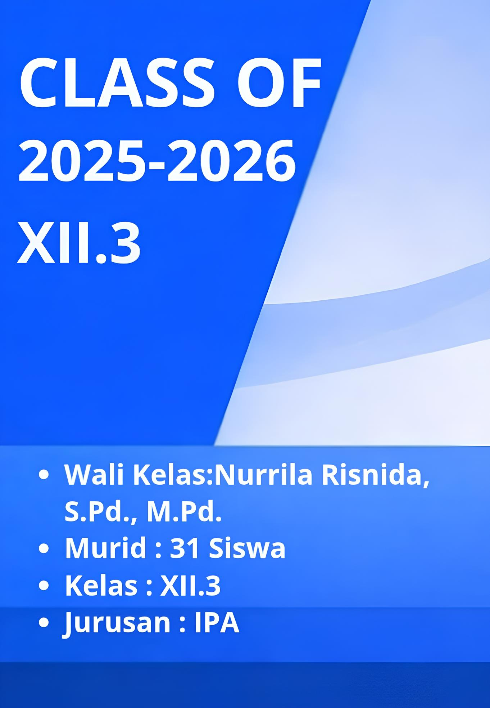Hari Pendidikan Nasional (HARDIKNAS) merupakan hari nasional yang diperingati setiap tanggal 2 Mei untuk mengenang jasa Ki Hadjar Dewantara sebagai pelopor pendidikan di Indonesia.
Hari Guru diperingati sebagai bentuk penghormatan kepada para pendidik yang telah berjasa membimbing dan mendidik siswa hingga mencapai cita-cita dan masa depan yang lebih baik.
Edufair acara yang sangat menyenangkan dimana kita mendengarkan seminar tentang kampus, lalu kita juga dapat mendatangi stand kampus untuk bertanya dan mendapatkan hadiah
 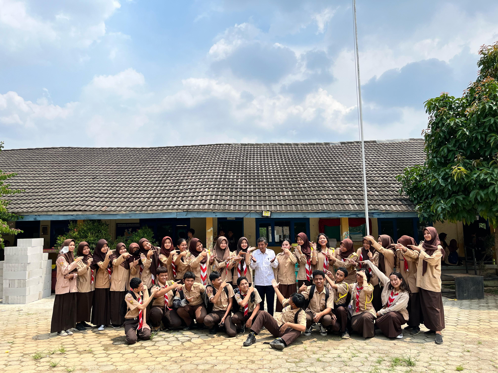
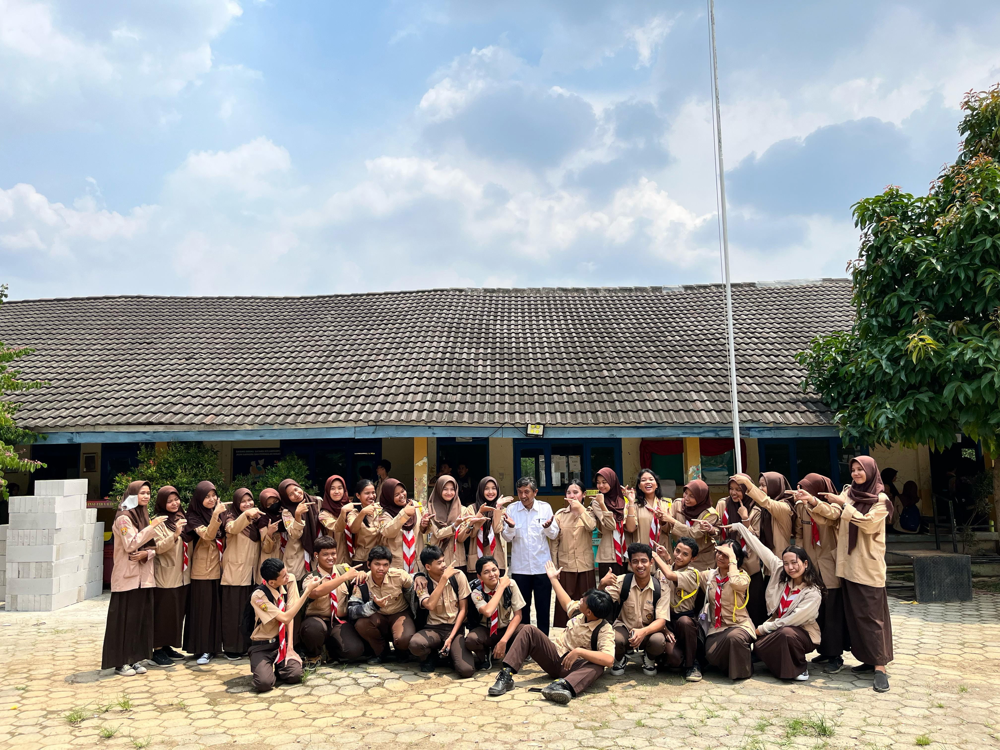

Pak Sholeh, guru bahasa Sunda dengan humor unik. Dengan gaya mengajar yang seru dan penuh energi, beliau meninggalkan kesan mendalam di hati murid-muridnya.Terkadang dalam mengajar dia memukul meja,membuat semua orang kaget,Meski telah berpindah sekolah, kenangan dan inspirasinya tetap abadi. Terima kasih, Pak Sholeh, atas dedikasi dan pelajarannya
Bu Mutia, guru fisika yang super keren Cara ngajarnya asik banget, bikin kita paham fisika dengan gampang. Beliau baik banget dan selalu kasih support buat murid-muridnya. Lovyu Bu Mutia
Bu Triana adalah guru pkn, beliau sering memberikan tugas, namun beliau selalu memberikan materi dan pemahaman sehingga pengerjaan tugas jadi lebih mudah
 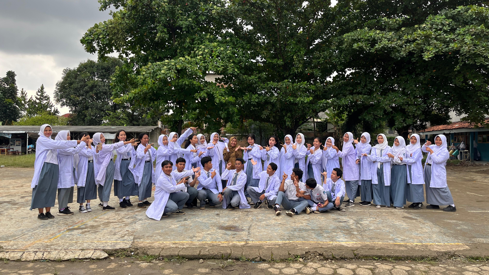
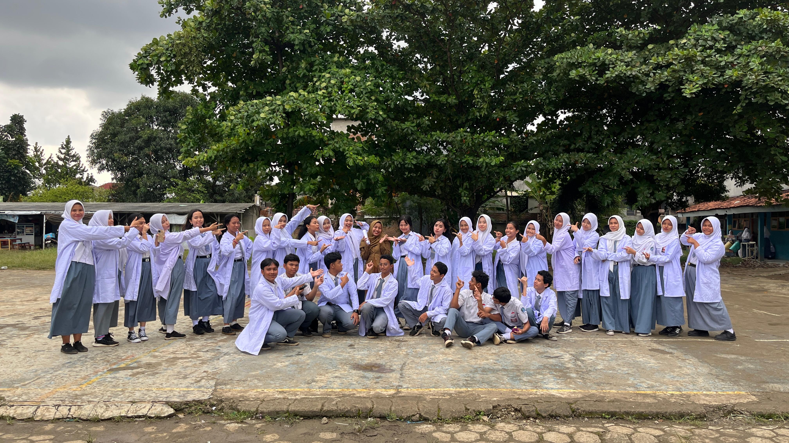

Bu Anggita beliau adalah guru kimia, cara mengajar beliau cukup unik, dimana ketika selesai memberikan materi beliau memberikan contoh soal untuk dikerjakan, membantu muridnya untuk memahami materi lebih dalan
Bu Rahmi, Adalah guru bahasa Indonesia, beliau sering memberikan materi dengan cara yang unik yaitu degan quiziz, dimana ketika murid mendapatkan jawaban yang benar dia dapat menyerang siswa lain dan mengurangi poinnya
Bu anita,beliau adalah guru sejarah yang sangat kritis pemahamannya terhadap sejarah membuka mata muridnya dalam mengenal politik dan keadaan saat ini yang sangat erat dengan sejarah di masa lalu.
Praktek seni, Seni adalah salah satu bentuk kita dalam mengekspresikan diri, di momen ini kita menunjukkan keinginan kita dalam face painting
 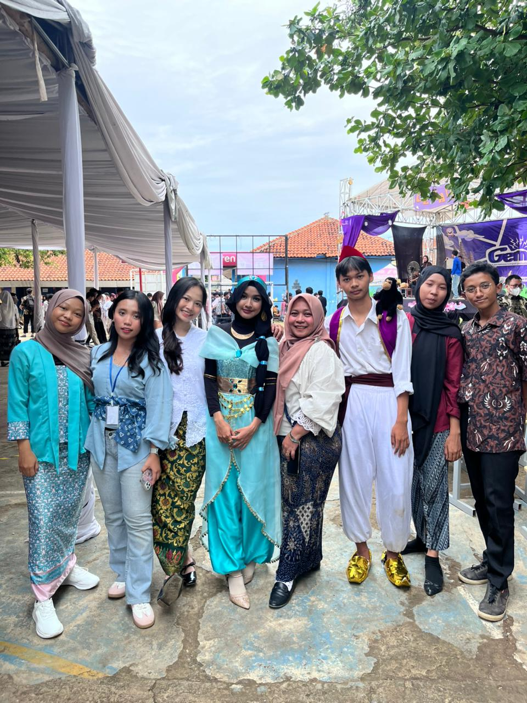
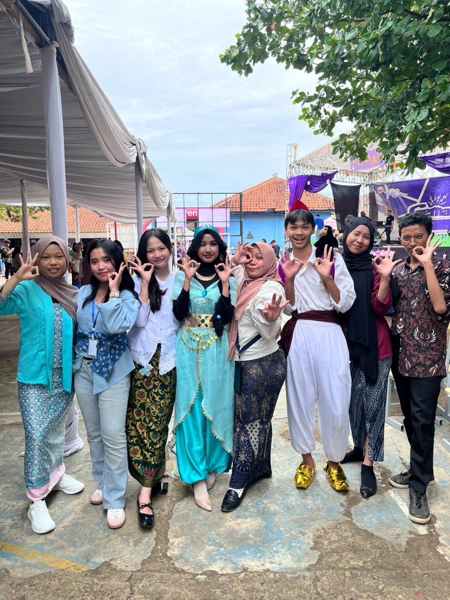
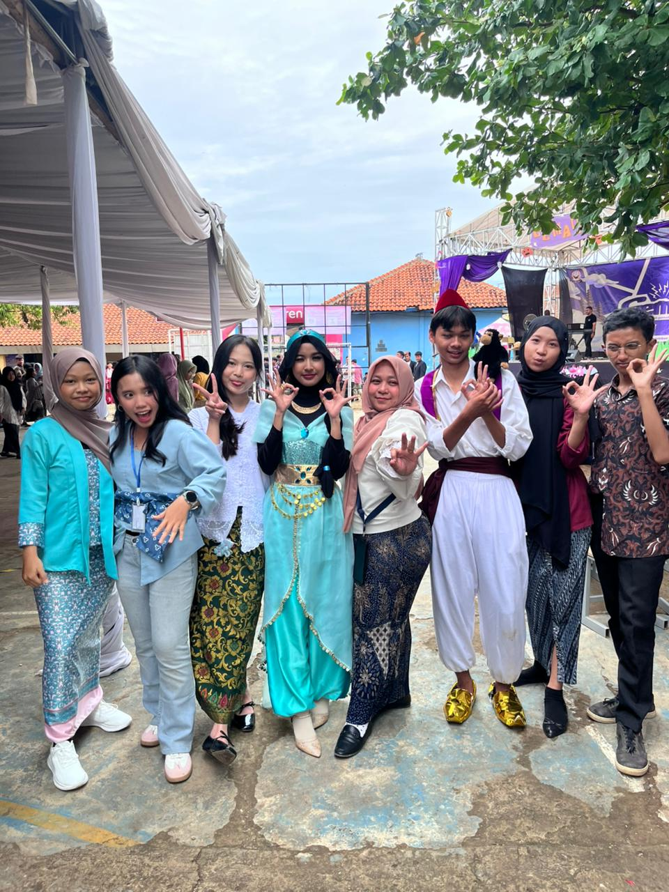
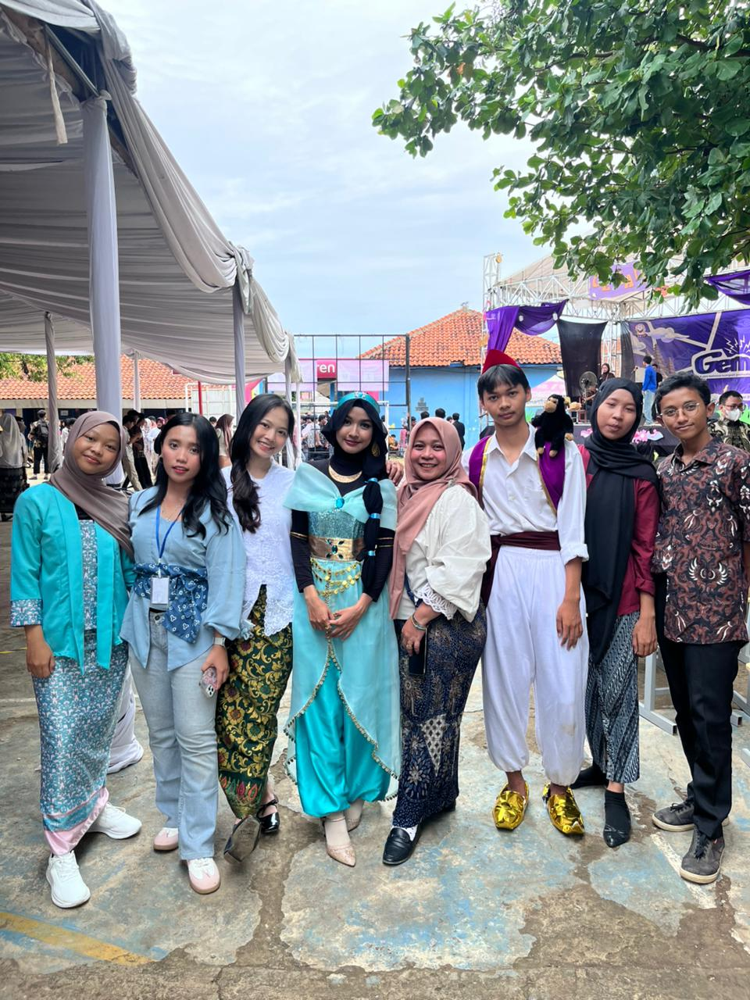
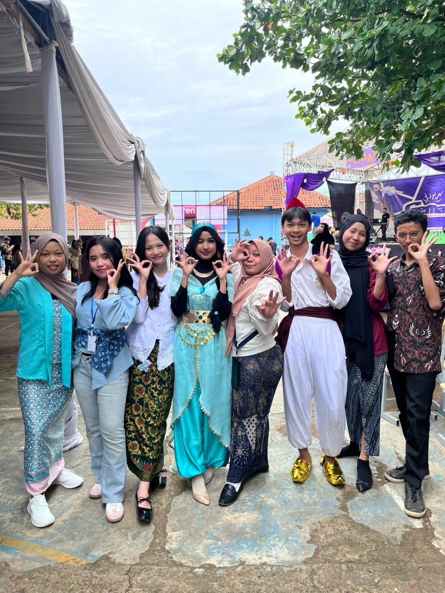
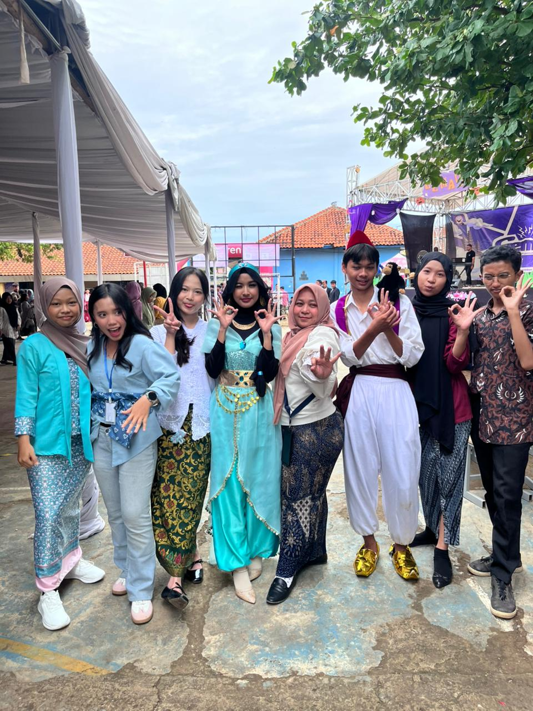
Pada fashion show kali ini, kelas kami memilih tema Aladdin dan Jasmine. Walaupun hasilnya tidak memuaskan karena tidak mendapat juara, tapi kelas kami udah berusaha yang terbaik dalam acara fashion show itu